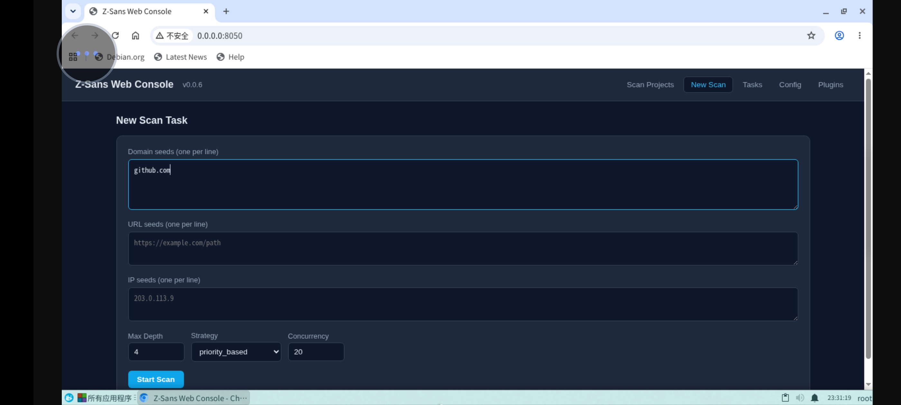
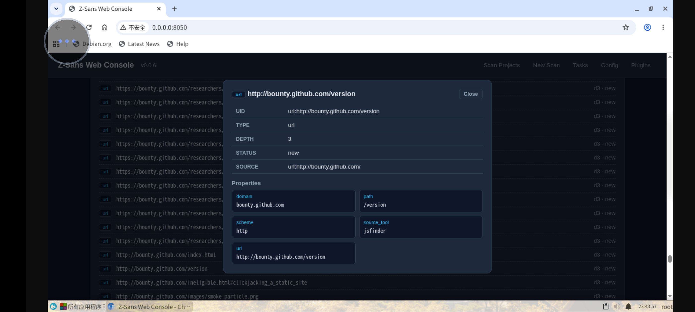

The Web console is a browser-based management interface for browsing scan projects, viewing live tasks, editing configuration, and managing plugins. It is implemented entirely with the Python standard library; the frontend is a single-file SPA that requires no build step or external CDN.
Starting¶
- Listens on
0.0.0.0:8050by default - Long-running service; exit with
Ctrl+C - After startup, access it via a browser (default
http://localhost:8050)
Authentication¶
The console is unauthenticated by default. Set the ZSANS_WEB_PASSWORD environment variable to require a password — once set, every endpoint is blocked until authorized (page requests get a standalone login page, API requests get 401):
Two authorization ways:
| Client | Method |
|---|---|
| Browser | Log in on the login page → receives an HttpOnly + SameSite=Lax session cookie (valid for 24h; the server only stores its SHA-256 digest) |
| Third-party programs | Pass the password directly as a token header — no login round-trip needed |
Third-party API access example:
curl -H "Authorization: Bearer your-secret" http://127.0.0.1:8050/api/tasks
curl -H "X-API-Key: your-secret" http://127.0.0.1:8050/api/projects
Login attempts are rate-limited (more than 10 failures within 60 seconds returns 429). POST /api/auth/logout revokes the current session.
Binding to non-loopback addresses
The unauthenticated default assumes a trusted localhost/LAN. When exposing the console beyond localhost via --host, always set ZSANS_WEB_PASSWORD.
Feature Overview¶
| Page | Function |
|---|---|
| Projects | Browse historical scan projects under output/, view asset graphs and charts |
| Compare | Compare two scans, find assets present in only one of them |
| New Task | Start a scan with script/url/ip seeds, customizable depth, strategy, and concurrency |
| Live Tasks | Real-time streaming logs (SSE), stop tasks, rescan |
| Config | View and edit breeding-config.yaml online (with YAML validation) |
| Plugins | Enable/disable plugins, plugin built-in Web UI, JSON-Schema form configuration |
Creating a Scan Task¶
The form supports three types of seeds (one per line):
- Domain
domain:example.com - URL
url:https://example.com - IP
ip:93.184.216.34
Advanced options:
| Option | Range |
|---|---|
| max_depth | 1–10 |
| strategy | priority_based / depth_first / breadth_first / time_based |
| concurrency | 1–50 |
Server-side seed validation
Seeds submitted through the Web console are strictly validated before a scan starts: domains must be RFC-valid hostnames, URLs must have an http(s) scheme and a valid host, and IPs must be literal IPv4/IPv6. Invalid seeds are rejected with 400 and per-seed reasons — this keeps untrusted input away from external tool command lines (tools are always invoked with argument lists, never through a shell).
After submission, the task runs in a background daemon thread (zsans-web-<id>), and you can immediately view the live logs.
Live Tasks and SSE Logs¶
- The task list is refreshed by polling
/api/tasksevery 3 seconds - Live logs prefer SSE (
EventSource('/api/tasks/<id>/logs/stream')) - The first push sends the full log history, then increments every 0.5 seconds
- When the task ends,
event: doneis sent, then the stream closes - Falls back to 1-second polling when EventSource is unsupported
Actions:
- Stop task: calls
engine.stop(), triggering checkpoint saving and report generation; the status showsstopped - Rescan: reuses the original task's seeds and configuration, generating a new task ID
Browsing Projects and Comparison¶
- The project list recognizes directories matching the
YYYYMMDD_HHMMSSformat underoutput/ - Project details read the JSON asset graph; while a scan is running, a live snapshot is provided (read directly from the running engine's asset graph)
- Project comparison: select up to 10 projects, use the first as the base, compute set intersection/difference on node uids, output
only_in_base,only_in_others,common, etc.
Editing Configuration¶
GET /api/configreturns the configuration file's raw text; after editing online,POST /api/configoverwrites the whole fileyaml.safe_loadvalidation runs before saving; syntax errors returnYAML syntax error: ...POST /api/config/patchsupports partial updates by dot path (a.b.c), preserving comments- Plugin enable/disable uses plain-text regex rewriting of the
plugins.disabledlist, without erasing user comments
Plugin Management¶
GET /api/pluginslists all plugins' names, versions, events, states, and Web UIsPOST /api/plugins/<name>/toggleenables/disables (no restart required)- A plugin can provide a
webui(HTML entry); the console embeds it in a sandboxed iframe, loading sub-resources via the plugin-name path - A plugin can declare a
schema(JSON-Schema); the console automatically renders a form, saving the configuration tooutput/plugin_config/<name>.yaml
API Overview¶
GET¶
| Path | Function |
|---|---|
/ /index.html |
Frontend single page |
/static/<name> |
Local frontend assets (Vue runtime) |
/api/health |
Health probe + version + language |
/api/i18n |
Frontend language pack |
/api/projects |
Project list |
/api/projects/<pid> |
Project asset graph JSON (or live snapshot) |
/api/compare?ids=a,b |
Project comparison |
/api/tasks |
Task list |
/api/tasks/<tid>/logs/stream |
SSE live logs |
/api/tasks/<tid>/logs?tail=N |
Task log tail |
/api/tasks/<tid> |
Task details |
/api/config |
Raw text of the configuration file |
/api/config/json |
Parsed configuration dict |
/api/config/schema |
Default configuration (form schema) |
/api/plugins |
Plugin list |
/api/plugins/<name>/webui[/sub] |
Plugin Web UI assets |
/api/plugins/<name>/config |
Plugin configuration |
POST¶
| Path | Function |
|---|---|
/api/auth/login |
Log in ({password}) → sets session cookie; rate-limited |
/api/auth/logout |
Revoke the current session |
/api/scan/start |
Create a task ({seeds, config}) → {id: "task-N"}; seeds are server-validated |
/api/projects/delete |
Delete projects ({ids}) |
/api/tasks/stop |
Stop a task ({id}) |
/api/tasks/rescan |
Rescan ({id}) → new task ID |
/api/config |
Save the full configuration (raw text) |
/api/config/patch |
Partial update by dot path |
/api/plugins/<name>/toggle |
Enable/disable a plugin |
/api/plugins/<name>/config |
Save plugin configuration |
Security Notes¶
- Authentication: when
ZSANS_WEB_PASSWORDis set, all endpoints require authorization (see above); password comparison uses constant-time comparison and login is rate-limited - Request bodies are capped at 2 MB to prevent memory-exhaustion DoS
- The SSE log stream no longer sends
Access-Control-Allow-Origin: *; scan logs are only readable by the same-origin frontend - Project IDs must match the
\d{8}_\d{6}timestamp format to prevent path traversal - Static assets only take the basename;
..is rejected - Plugin Web UI assets are validated against directory escape
- Deleting a project does not delete the run_dir of a task currently running
Screenshots¶

